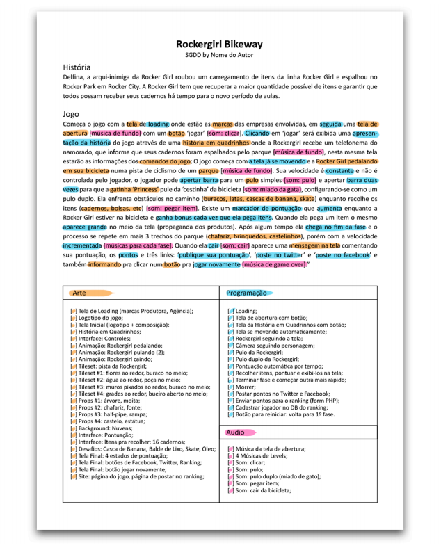
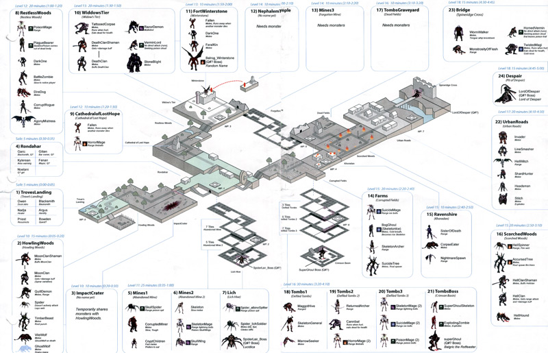
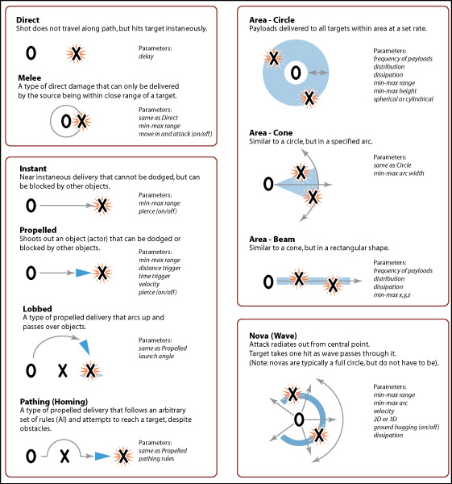
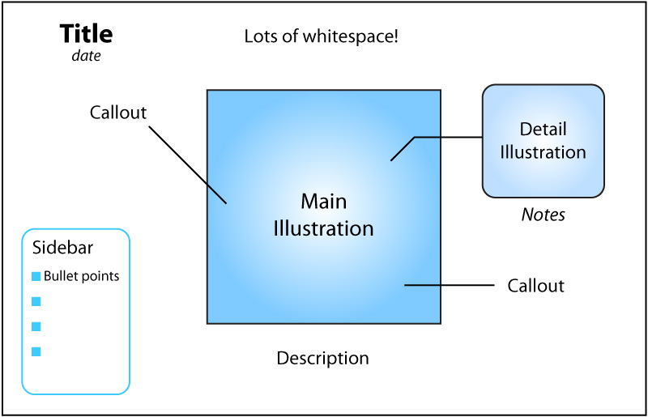

Documentação e GDDs
Um dos principais documentos utilizados durante o desenvolvimento de jogos é o documento de game design (ou game design document / GDD). Nesse documento, estão detalhados diferentes aspectos do jogo, voltados a explicar a experiência desejada pelos designers, assim como seu funcionamento, objetivos e regras, principais decisões estéticas e outras considerações. Não existe um único padrão ou abordagem para a elaboração desse tipo de documento, então vamos ver alguns métodos diferentes para lidar com essa documentação.
Vantagens e objetivos de GDDs
- Comunicar a visão do designer de forma clara
- Ajudar a esclarecer dúvidas em relação a diferentes aspectos do jogo, principalmente escopo
- Marcar detalhes importantes para manter o caráter único do jogo
- Dar uma base comum para que as diferentes especialidades desenvolvam suas áreas
Desvantagens e problemas de GDDs
- Incentiva uma ideia de que jogos podem ser pensados completamente “de antemão” e não evoluídos aos poucos
- Pode ficar desatualizado rapidamente
- Pode ficar grande demais e não ser lido
- Nível de detalhe incoerente: toda a vida de um personagem, poucos detalhes sobre mecânica principal
- Podem ser uma grande perda de tempo de desenvolvimento
- Podem engessar ideias que ainda não foram comprovadas por testes
- Designers se apegam a GDDs
Metodologias
GDD do tipo “bíblia”
GDD de Grim Fandango, 1996.
Formato em que um grande documento com ênfase na representação verbal explica todas as áreas do jogo em grande nível de detalhe. É o formato mais difícil de ser mantido e com menos chances de ser lido por toda a equipe.
Short Game Design Document (ShGDD)

Formato reduzido e simples, focado na escrita, voltado para game jams e trabalhos escolares que precisam de documentação resumida e que já incorpora elementos de gestão de projetos.
GDDs “canvas” de uma página
Exemplo de SiGDD
Formatos para criação de game designs de alto nível (menos detalhes, mais ideias gerais). O foco está numa apresentação resumida em que seja fácil diferenciar ideias e apresentar todos os principais aspectos de uma ideia de jogo, seja de forma textual ou visual.
Os formatos acima são fortemente inspirados nas idéias de Stone Librande, que cunhou o termo One-Page Design para identificar abordagens que comunicam ideias sobre um jogo através de diagramas e imagens de forma resumida e atrativa em formatos grandes para facilitar apropriação e discussão.

Diagrama explicando progressão de fase em Diablo 2 (Stone Librande).

Diagrama mostrando o sistema de combate em Diablo 2 (Stone Librande).

Exemplo de template para One Page Design (Stone Librande).
Game Design Log

Diagrama de um game design log.
Formato focado em registrar as decisões importantes e principais elementos do processo de game design de um jogo. Foi proposto e formulado por Daniel Cook. É baseado na ideia de que o processo de design do jogo evolui com o tempo e é uma conversa. Sua estrutura é a seguinte:
- Começar com um conceito resumido no final do documento.
- Criar protótipos.
- Ao longo do desenvolvimento, criar um post diário no topo do documento, contendo data, anotações de jogo, próximos passos, tarefas cumpridas, experimentos.
- Repetir sempre que necessário e adequado.
Para discutir o material, use ferramentas como comentários no texto, notificações por email, Slack, etc.
Como criar um GDD?
- Usar ferramentas que facilitem colaboração, seja presencial ou à distância (comentários, marcar pessoas, histórico). Exemplos: Google Docs / Planilhas, Trello.
- Tornar uma pessoa responsável pela manutenção e atualização do GDD, mas aberta aos inputs de todos.
- Use imagens (próprias ou com licenças adequadas) quando possível, pois às vezes um diagrama ou mockup explica melhor uma feature do que muitas palavras.
- Lembre-se: cada jogo vai acabar tendo um GDD diferente, para atender suas necessidades específicas. Pense no que é mais importante para seu jogo.
Por exemplo, um documento de Super Mario Bros. possivelmente teria um capítulo sobre 1) Movimentação, 2) Inimigos, 3) Elementos do level, 4) Levels, 5)Limitações de gameplay e 6)Feedback sonoro e visual. No primeiro capítulo, seria descrito a movimentação do Mario, no que ela era semelhante a outros jogos plataforma da sua época e no que ela era diferente. No segundo, cada um dos inimigos seria descrito e como eles funcionavam. No terceiro, o funcionamento das estruturas do mundo como os buracos, os tubos, as plataformas que podem ser atravessadas ou não, destruídas ou não e a bandeira de fim de fase. O capítulo de levels daria uma intro de quantos mundos e quantos levels por mundo existem, mencionando as mudanças estéticas e de level design em cada um deles. O quinto capítulo falaria do sistema de vidas, de pontos e de tempo, ou seja, tudo que limita o jogador e adiciona dificuldade ao jogo que é externo ao level design. Por fim, o capítulo de feedback explicaria a musica e efeito visual de pegar uma estrela, os efeitos de morte, o som de pegar uma moeda, a aceleração da musica quando o tempo está acabando etc. (Thais Weiller)
Exemplo: GDD de pitch de Diablo 1
Referências
- COOK, D. Lost Garden: Game Design Logs, [s.d.]. Disponível em: http://www.lostgarden.com/2011/05/game-design-logs.html. Acesso em: 30 ago. 2016
- SCHELL, J. A arte do game design: o livro original. [s.l.] CRC Press, 2010.
- WEILLER, T. GDD: quando, onde e como. Disponível em: http://gamestartlivro.net/post/138084851042/gdd-quando-onde-e-como. Acesso em: 30 ago. 2016.